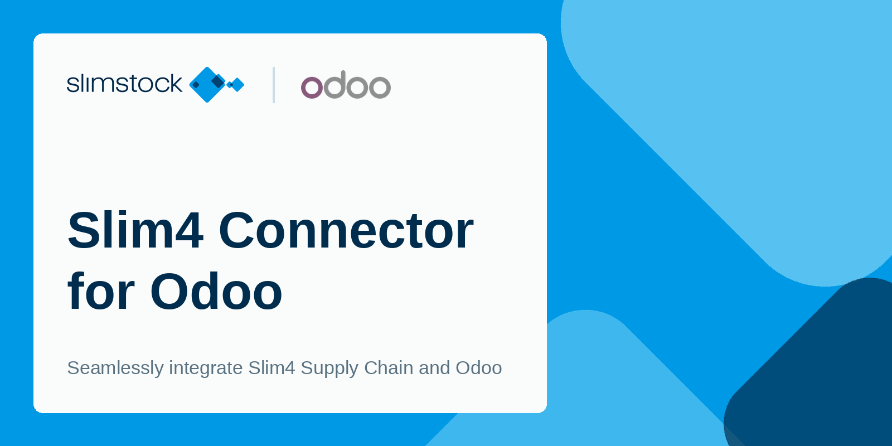
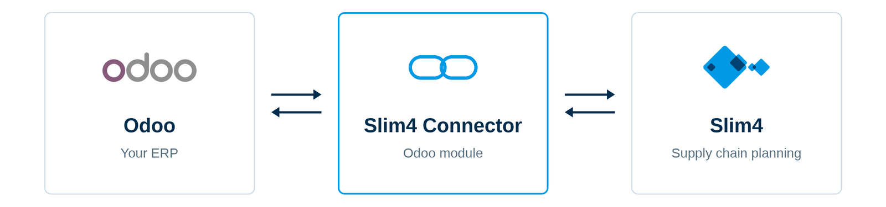
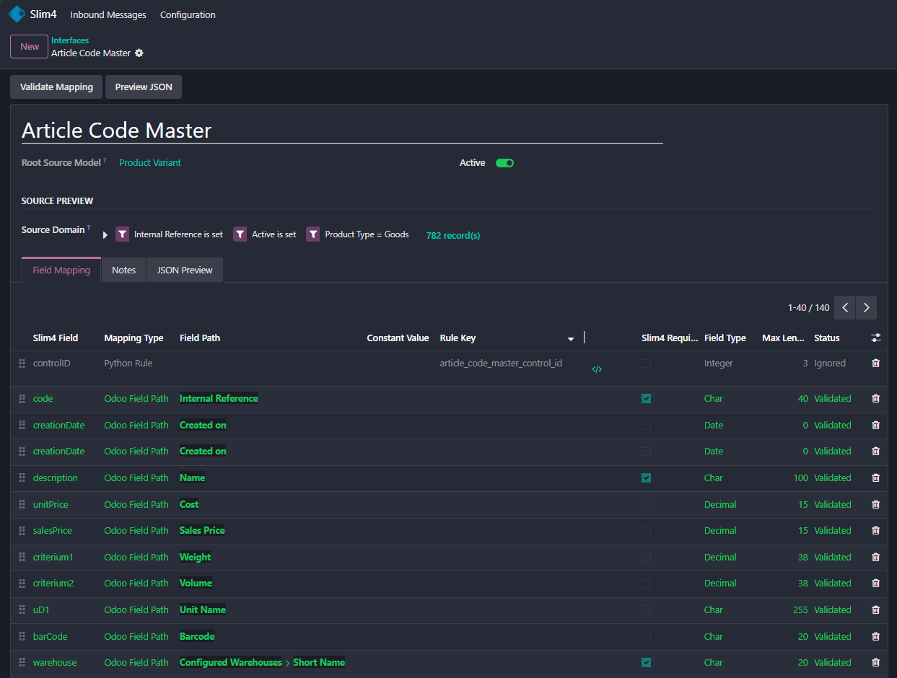
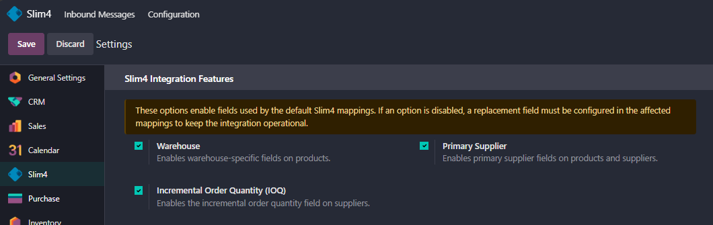
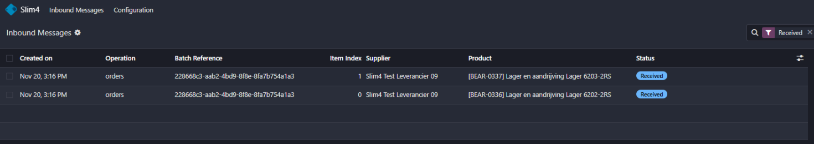

Seamlessly integrate Slim4 Supply Chain and Odoo, with a secure two-way data exchange that fits your business.

Three steps from installation to a working integration.

Your Odoo partner installs and configures the module, using the Installation and Configuration Guide.
Create a bearer token in Odoo and share the URL and credentials with Slimstock.
Data flows both ways between Odoo and Slim4 through secure web services.

Map each Slim4 field to the Odoo field you need, with a preview of the source data and a validation status per field.
Switch on three extra fields in Odoo: warehouse, primary supplier and incremental order quantity.

Orders from Slim4 arrive in Odoo as inbound messages, with a clear status per line.

Contact us for the Installation and Configuration Guide, the Developer Guide and support.
integrations@slimstock.com